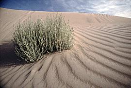

Desiertos
La desertificación, se debe, más que a variaciones climáticas a la acción del hombre, por exceso de cultivo, corte irracional de árboles, riego imprudente y toda una serie de acciones que alteran el equilibrio de una región específica.
El clima de los desiertos se caracteriza por las altas temperaturas, cielos sin nubes, sol inclemente, intenso calentamiento diurno de la superficie, acompañado de vientos huracanados, escasas lluvias y una evaporación muy rápida. Las noches, en cambio son extremadamente frías, e incluso es frecuente que el rocío, aún en los desiertos tropicales; se convierta en escarcha.

Los desiertos presentan una vegetación característica. Entre los vegetales abundan particularmente los cactos: los hay de todos los tamaños y variedades, pero en general, de raíces poco profundas para poder absorber la humedad superficial y almacenarla en su tronco.
Los animales y las plantas que logran sobrevivir en el desierto presentan adaptaciones que les permiten soportar la escasez de agua y los cambios de temperatura. La fauna se caracteriza mayormente por insectos, arañas, culebras, lagartos, ratas y pájaros. Algunos de estos animales se protegen del calor, guareciéndose durante el día en sus madrigueras y muchos son capaces de entrar en un estado de letargo.
Cada año se pierde, a favor del desierto, igual o más tierra que la que se recupera con obras de riego. Se considera que al ritmo actual, en pocos años una tercera parte de las tierras cultivables de nuestro planeta, se habrá convertido en desierto.
Un informe de las Naciones Unidas indica que la extensión de los desiertos, provocada por el mal uso que hace el hombre de las tierras, alcanza en la actualidad el 7 por 100 de la superficie planetaria (un área mayor que la del Brasil). Por razones climáticas, sólo el 36% de la Tierra es árida, pero los últimos estudios indican que la degradación de la Tierra por causas humanas ha elevado tal índice al 43%.
En América Latina se observan ya algunas situaciones críticas: cerca del 60% de las tierras de Argentina son áridas y el 15% semiáridas. El desierto de Atacama, en Chile, con unos 132 000 km² es el lugar más seco de la Tierra y más de la mitad del territorio chileno es árido, o semiárido. En Perú hay zonas en que llueve menos que en el Sahara. En el norte del Brasil se encuentran tierras muy secas. La erosión preocupa en Bolivia, Paraguay, Uruguay, Ecuador y Colombia.
Los desiertos, a la vez guardan para el hombre insospechadas riquezas. Abundan diversos minerales y el suelo es poco fértil. Si se logra beneficiar estas tierras áridas, pueden obtenerse cosechas satisfactorias. Estas razones han llevado a algunos científicos a afirmar que el desierto es la tierra del porvenir.
>> regresar